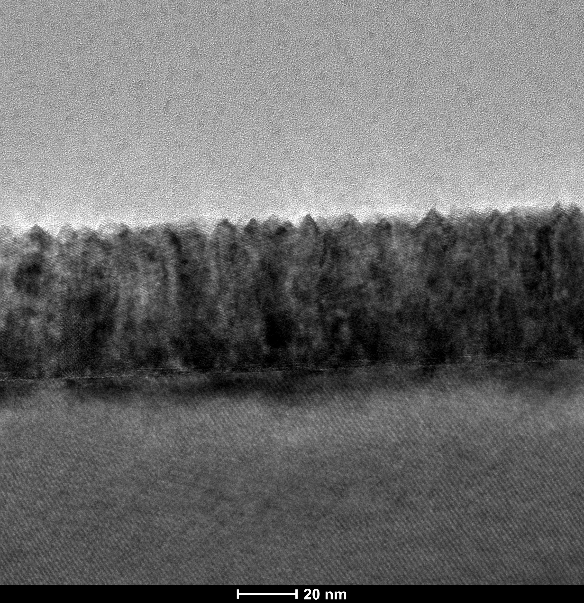

Au–CeO₂ vertically aligned nanocomposite01Emerging devices · Compact modeling
Research lead
Making memristor programming predictable
I led the experiments, compact modeling and programming tests for a CeO₂:Au memristor, then used measured errors to evaluate neural-network inference.
22% → 94%4/18 → 17/18 successful trials · ±0.05 decade at 10 s
Explore the project